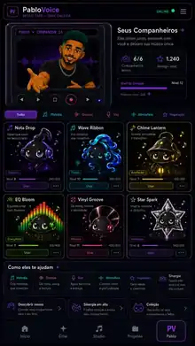
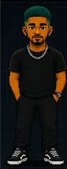
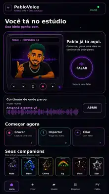
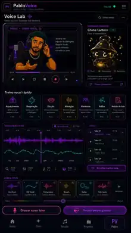
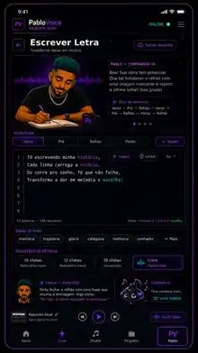
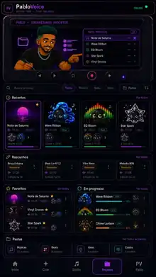
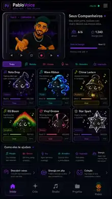

Você tá no estúdio.
Sua ideia ganha som com uma experiência app-first, estética Retro Tape em Ônix Galáxia e o Pablo como companion central. Aqui o site para de parecer vitrine estática e passa a respirar música: glow, movimento, reação de contexto e fluxo criativo de verdade.

Pablo + Companions
O Pablo guia a experiência e reage à função da tela. Os companions entram quando a função musical faz sentido.

Energia da sessão
Escuta • criação • refinamento
O que dá vida ao site
Em vez de um board estático, o site passa a ser um produto vivo: navegação clara, cartões com estado, telas reais, linguagem emocional coerente e presença canônica do Pablo.
Studio
Timeline, gravação, edição, play, rec, trims, exportação e sensação de DAW simplificada para quem cria pelo celular ou web.
Voice Lab
Voz em primeiro plano: limpeza, afinação, textura, doubles, harmonias e feedback visual com leitura simples.
Beat Lab
Ritmo, groove e construção de base com linguagem visual pulsante, pads vivos e respostas musicais rápidas.
Pablo + Companions
O Pablo orienta. Os companions entram por função musical — melodia, groove, atmosfera, inspiração e sinergia — sem quebrar o cânone.
Fluxo app-first com reação de contexto
Cada tela ativa uma reação diferente do Pablo, sem mudar identidade. Assim o produto parece vivo, guiado e pronto para implementação.





Modo Studio
“Aqui a gente constrói a faixa. Te dou direção, você me traz a ideia.”
Companions com função musical real
O site não trata os companions como decoração. Eles aparecem como camada funcional do produto, respeitando suas áreas: melodia, fluxo, atmosfera, equalização, groove e brilho/inspiração.

Entra quando o foco é melodia, ideia e sensibilidade musical.
Surge em fluxo, movimento, sensação líquida e vibe contínua.
Aparece em atmosfera, acolhimento e transição de clima.
Assume o espaço quando a sessão pede equilíbrio, cor e presença.
Chega no swing, textura e identidade rítmica.
Ativa brilho, inspiração, sonho e aquele toque de “isso aqui é hit”.